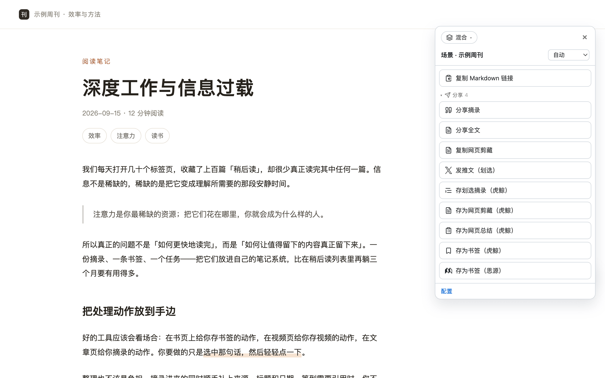

复制粘贴一路走下来
选中正文 → 复制 → 切到虎鲸 → 找今天的日记 → 粘贴 → 手动清掉页面自带的样式和导航残渣。一篇长文下来，人已经不想读了。
用例 · 虎鲸笔记（Orca Note）
顺手是一个浏览器扩展（也有油猴脚本）。接上你自己的虎鲸仓库之后，网页上的动作会多出一组「存进虎鲸」—— 整页剪藏按「标题为父块、正文为子块」存成可折叠的树，标签和属性自动挂上； 划词摘录、任务、豆瓣书目各有一条，一次点击写完。
无账号 · 无服务器 · 内容只发到你自己填的 MCP 端点

为什么麻烦
虎鲸本身很好用，麻烦的从来是「网页 → 笔记」这一段路。这几件事每次都做、每次都费手。
选中正文 → 复制 → 切到虎鲸 → 找今天的日记 → 粘贴 → 手动清掉页面自带的样式和导航残渣。一篇长文下来，人已经不想读了。
存进去的笔记要能找回来，就得挂「书签」标签、填链接和域名属性——每次都要点开属性面板、翻标签列表、一项项填。
整页正文粘成一个巨大块，滚动条拉半天；想要「标题在上面、正文收在下面」的折叠结构，得自己剪开再缩进。
几个月前存过、忘了，今天又存一遍，回头翻日记才发现两条几乎一样的记录。
读到好句子想记下来，切窗口、找日记、粘贴——等回来已经忘了刚才读到哪，或者干脆懒得记了。
在 issue、文档、邮件里看到「这件事我得做」，看完关掉就忘了——没有一个地方把它们收在一起。
怎么搭
顺手走的是虎鲸自带的 MCP 服务，只要虎鲸在跑就行。
在虎鲸里打开 MCP 服务并复制 Token——默认端点是 http://localhost:18672/mcp。
在顺手的「连接」页新建虎鲸连接，填 MCP 端点、Token 与仓库 ID，点「测试连接」——连上会明确回「连接正常」， Token 无效会直接说鉴权失败，不用猜。
回到动作里挑「存进虎鲸」的那一条，配内容模板、标签与属性、落点与插入位置。开箱的「书签 / 摘录 / 任务 / 剪藏 / 记一句话」都带好了默认方案，可以直接用。
连接配好后，「存进虎鲸」的动作会自动出现在该出现的地方——没配好之前它们收在面板底部的「未配置」区， 不会占着位置让你误点。
场景
下面是开箱自带的几条，都是配好连接就能直接点的；每条的字段、模板与清洗规则都在配置台里可视化调整。
网页标题为父块、正文为子块，标签挂在父块上——点开就是一棵能折叠的树，长文不再是一坨。
链接按「书签」标签方案存成属性；页面里被隐藏的内容（含广告拦截器藏掉的广告）不会进剪藏。
选中一段话，点浮条上的「存为摘录（虎鲸）」——摘录连同来源链接写进今日日记，默认挂在「摘录文章」标签下。
读到哪里记到哪里，不用离开页面、不用切窗口。
在 issue、邮件、文档里看到要做的事，划选那句点「存为任务（虎鲸）」——写进日记并挂上「task」标签，状态默认 TODO。
待办集中在一处，翻日记就能看到今天该干什么。
「存为网页总结（虎鲸）」先用你自己的模型把整页正文总结成结构化中文，再按剪藏同款形态存进去——标题为父块、总结为子块。
提示词就是配置，改一句就换成另一件事（要点、关键词、反驳意见…）。
豆瓣的书 / 影 / 游页面各自解析出 17 / 20 / 11 个字段（含简介、集数、形式等），一次点击写进虎鲸。
封面图这类字段按标签方案挂成属性。
划选点「高亮」，标注留在页面上（刷新还在、不改页面结构）；读完整页，把这一页的高亮一次性存进虎鲸，或复制成文本。
看到一句就点「加入暂存」，攒够了在悬浮球面板顶部的暂存区里一次全部存进虎鲸——不用一段一段点。球上会有计数角标提醒你还攒着几条。
按 Ctrl/⌘ + Shift + K 唤起命令面板，直接打字——「用这段话…」区里的「记一句话」把这句话存进虎鲸，回车即走。
和别的能力搭起来
虎鲸落点是整套工具箱里的一个环节，能接在别的动作后面，也能自己跑。
一个动作可以配一串「接着做」：存虎鲸书签，接着写一行思源数据库——一次点击，两个库都有。步骤按顺序执行，任一步失败即停，整条链共用同一份页面信息。
保存成功会返回一个 orca-note:// 深链，指向刚写进去的那个块。接一步「打开链接」就能直接跳回虎鲸；接「复制到剪贴板」就把链接留下。
豆瓣书 / 影 / 游页可以设成打开就自动运行「存为图书（虎鲸）」——浏览即入库，一次点击都不用。默认关闭、逐个动作开启，还能设「执行前询问」。
落点留空 = 今日日记；也可以填块 ID 插到某个特定位置，或写 date:<Unix 秒> 指定某天。插入位置可选文末 / 文首 / 某块之后 / 某块之前。
标签和属性缺了会自动创建，类型按你的方案强转——日期存 Unix 秒、单选值必须落在已定义的选项里、块引用传数组。写标签属性走结构化挂载，不会被当成纯文本存进去。
剪出来的正文不对？在页面上点选容器（可多选合并、Enter 完成），满意了就「存为规则」升格成长期规则；也能让 AI 读一遍本页结构给几个候选，候选能不花钱地看效果。
常见问题
虎鲸笔记（Orca Note）是一款本地优先的大纲式笔记应用，自带 MCP 服务。顺手通过它的 MCP 端点写入，把网页正文、划词摘录、任务和书目存成笔记块，并把标签与属性按你配的方案挂上。
不用。写入时缺的标签和属性会自动创建，属性类型也会按你的方案强转（日期存 Unix 秒、单选值必须是已定义的选项、块引用传数组）。已经存在的标签只做补齐，不会改掉你已有的属性定义。
默认存进今日日记的末尾。整页剪藏走「标题为父块、正文为子块」的形态，标签挂在标题那个父块上，点开就是一棵可折叠的树；划词摘录和任务则是一行块。
不会。剪藏只算可见文本，再取包住正文的最小公共祖先——所以「正文只有一个段落」的页面也不会回落成整页；被隐藏的内容（包括广告拦截器藏掉的广告）不会进剪藏。
内置正文规则覆盖豆瓣、GitHub、B 站、微信公众号、少数派、X 推文串、小红书，其余网页走正文引擎自动识别。不对的话可以在页面上自己点选容器，或存成长期规则。
不会。内容只发到你填的那个 MCP 端点——通常就是你自己的电脑或局域网。顺手没有账号体系、没有服务器，作者收不到你的任何数据。
（用 AI 总结时，正文会发到你自己配置的模型端点，仅此而已。）
能。保存成功后会返回一个 orca-note:// 深链，指向刚写进去的那个块。可以在动作链里接一步「打开链接」直接跳过去，也可以接「复制到剪贴板」把链接留下。
免费使用，没有广告，也没有需要付费解锁的功能；不需要注册任何账号。配置与密钥只存在你的浏览器里，导出配置时密钥不会跟着走。
安装
商店装的两家都会自动更新；油猴脚本适合手机或不想装扩展的场景。
桌面首选，装好即自动更新。
与 Chrome 同一内核，功能一致。
先装脚本管理器（Tampermonkey / Violentmonkey；Android 用 Firefox，iOS 用 Safari + Userscripts），再装脚本。